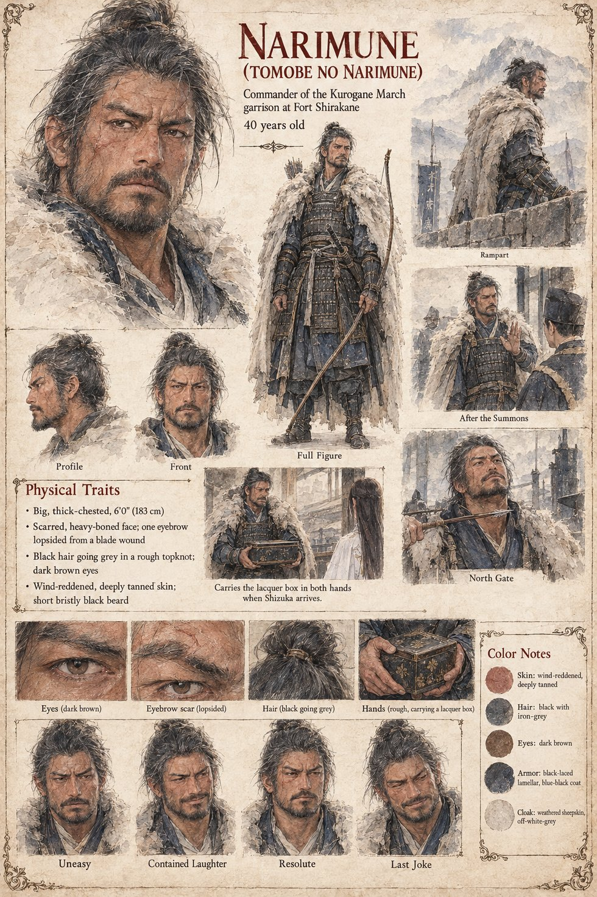

Narimune
Tomobe no Narimune · Commander of the Kurogane March garrison at Fort Shirakane · Higaide's elder cousin · 40 at the opening, 42 at the north gate
Commander of the Kurogane March garrison at Fort Shirakane, Higaide's elder cousin and, as the manuscript says, the only person alive who has ever seen him cry: a big, scarred, loud, uneasy man of forty with one lopsided eyebrow and a laugh that he does not use. Two days before the ordeal a rider from the north, a boy who has killed a horse to arrive in time, brings his letter, four lines long. It says that a man who walks into an ordeal because the Minister has built one is not proving anything; that the garrison has been told to expect a guest; that three horses will wait at the Northern Gate until the hour of the Rat on the nineteenth; and that old One-Eye would have told him that a man with two swords should be able to find the door. Higaide laughs once, and does not go.
In the second week of Iverin Shizuka and Tsuru reach the fort by ox-cart with two chests, a bundle and the lacquer box. He meets them at the gate, looks at his cousin's widow for a long moment and says nothing at all; he takes the child onto his shoulders and the box in both hands. That night he reads the notice of the dispossession and the Left Ministry's summons to himself, to appear at Tsukigase within thirty days and clear his hand, as the near kin of one the kami has taken, of whatever he may know. He does not appear. He walks the rampart in the snow until dawn, and when the Court's second summons comes he sends back, by the same rider, the same four lines, ending that the door is open. It is the first line, in two years, of what the histories will call the Rising of the Northern Gate: three thousand men who have held the marches against the Emishi for six generations with a great deal of principle and no money.
The Rising lasts two years and a season and costs, by the Court's own count, four thousand and one hundred lives. It ends in the third winter at the north gate of the capital, where a herald of nineteen named Haruyoshi, sent out under a white flag because no one with a rank to lose could be spared, watches the Commander ride to within a bowshot of the wall on a tired grey horse and sit looking up at it, eyebrow raised, as a man looks at a very expensive door. He is forty-two, heavy, scarred and tired, and the herald, who has been told that he is a monster, finds himself liking him. Asked what the Court wishes, the herald recites the old terms, that the Commander come to Tsukigase and clear his hand and the army be pardoned, and Narimune, for the first time in the memory of anyone who has served under him, laughs in earnest. I was sent for to clear my hand, and it seemed discourteous to bring only the one. An arrow loosed by a boy of sixteen on the wall, who has been told to shoot the first thing that moves, takes him in the throat before the laugh is done, and the army, which followed one man and holds no instructions for the loss of him, stands in its ranks for the length of a morning and then turns north in good order and goes home.
The manuscript gives his age, his build in outline, the eyebrow, the laugh and the last line. The sheet's 6 ft 0 in, wind-reddened skin, short bristly black beard, black-laced lamellar armour and weathered sheepskin cloak are its own, and so is the cause of the eyebrow, a blade wound. Its scenes are Rampart, After the Summons, Carries the lacquer box in both hands when Shizuka arrives and North Gate, and its expression panels run Uneasy, Contained Laughter, Resolute and Last Joke.
“I was sent for to clear my hand, and it seemed discourteous to bring only the one.”